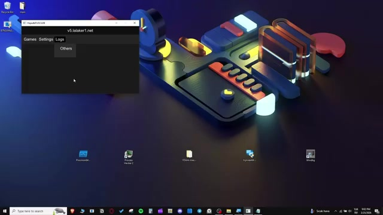
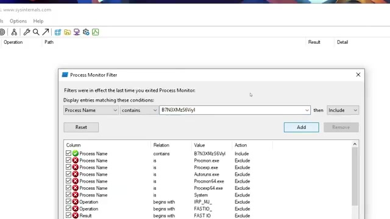
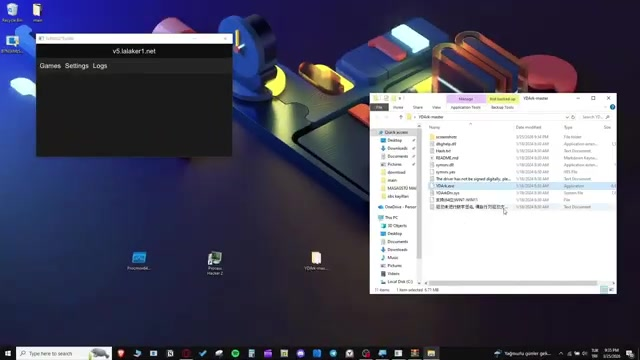
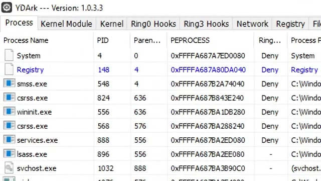
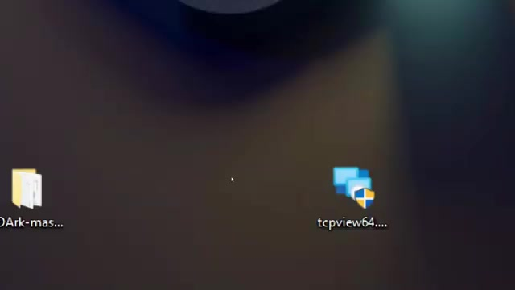
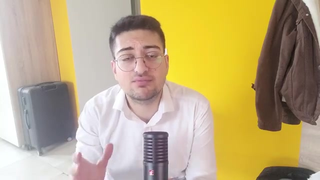

A forensic investigation into how a commercial cheat exploits vulnerable signed drivers, injects into DWM.exe, and hides entirely in Ring-0 kernel memory.
🕐 ~11 min🔬 6 Tools🎯 8+ Techniques⚡ Critical
Ring-0
Privilege Level
0
Files on Disk
DWM.exe
Hijacked Process
BSOD
Kill Switch
1E
Bug Check Code
🔍 Phase 1 — Reconnaissance
00:00 – 01:18
🛡️The Vulnerable Driver Threat Model
The investigation opens with a critical premise: the biggest danger isn't a virus — it's a completely legal, signed file. When companies like Nvidia release signed drivers, they get kernel access. But developer mistakes leave backdoors that hackers exploit to bypass anti-cheat, manipulate memory, and compromise the OS.
The cheat is sold online. Upon download, the .exe name is randomized every time — the first anti-forensics technique. The analyst sets up a Windows 10 environment. Behavior is immediately alarming: Task Manager cannot close it, and attempting to reboot produces a Blue Screen of Death.
📸 01:44 — Cheat website with randomized download

📸 02:15 — Cheat control panel & game interface
Filename RandomizationBSOD on ShutdownProcess Protection
🎯 Phase 2 — The Hunt
02:12 – 03:36
🔎Process Monitor — Drop & Load Trap
Using ProcMon (SysInternals), a strategic filter is set to catch the "drop and load" technique — where cheats write a .sys file, load it into the kernel, then delete it:
Process Name contains [cheat_name]
Path ends with .sys
Operation contains WriteFile
Result: Completely empty. No .sys file creation detected. The cheat isn't using a standard driver drop.

📸 02:55 — ProcMon filter dialog with cheat process name filter
ProcMonDrop & LoadNo Disk Activity
03:39 – 04:30
🔬Process Hacker — Service & Driver Scan
Process Hacker shows color-coded processes (purple, gray, orange) but no suspicious process is visible. The Services tab with "Key Modified Time" sorting reveals nothing.
Pivot: using "Find Window" to locate which process owns the cheat's visible UI panel.
📸 04:10 — Process Hacker process tree inspection
Process HackerService EnumerationWindow → Process Mapping
04:22 – 04:48
💀Discovery: DWM.exe Hijacking
Critical finding: The cheat's window belongs to Desktop Window Manager (dwm.exe) — a core Windows system process. The cheat has injected itself into DWM.exe via process hijacking. Memory inspection is blocked — the cheat strips handle rights to prevent any process from reading DWM's memory.

📸 05:00 — DWM.exe identified as the injected host process
YDArk is deployed to detect kernel hooks and hidden files. Over 500+ drivers are loaded in a normal Windows system. The Kernel → System Callbacks section is inspected — modern cheats set hooks here.
Red flags: missing module names, random memory addresses, unsigned drivers. Result: Nothing found.

📸 05:20 — YDArk kernel module & process inspector
YDArkKernel Callback InspectionNo Kernel Hooks
06:20 – 06:54
🌐Network Sniffing — TCPView
Hypothesis: maybe the cheat downloads the driver from the internet. TCPView monitors all connections — Process Name, Remote Address, Remote Port. No suspicious network activity detected.

📸 06:35 — TCPView showing live network connections
TCPViewNetwork ForensicsNo C2 Traffic
🧠 Phase 3 — Memory Forensics
06:56 – 07:58
💾BSOD Memory Dump Strategy
Since live analysis fails, the analyst pivots to post-mortem forensics. When Windows crashes with BSOD, it snapshots everything in RAM to C:\Windows\MEMORY.DMP.
⚠️ Pitfall: The C: drive must have ≥5% free space for Windows to write the dump file.
📸 07:54 — Collecting crash dump after forced BSOD
Memory DumpEvent ViewerCrash Forensics
07:54 – 08:52
🐛WinDbg — Crash Dump Analysis
WinDbg analyzes the crash dump. The !analyze -v command reveals:
BUGCHECK_CODE: 1e (KMODE_EXCEPTION_NOT_HANDLED)
BUGCHECK_P1: ffffffffc0000005 (Access Violation)
BUGCHECK_P2: ffffcc0e95e11225 → NO MODULE NAME
BUGCHECK_P3: 1
BUGCHECK_P4: 2253ad40008
The smoking gun: Normally WinDbg shows a module name next to the crash address. Here there is nothing — no name, no file. Code is executing from unmapped, anonymous kernel memory.
Exploited a vulnerable signed driver for initial kernel access
Carved code into Non-Paged Pool memory (kernel RAM that never writes to disk)
Created a fake system thread via the kernel's process manager
Injected UI into DWM.exe for visual control
Stripped handle rights to prevent memory inspection
This is why ProcMon, Process Hacker, YDArk, and TCPView all found nothing. The cheat is entirely fileless in Ring-0 memory.

📸 09:47 — Ring-0 fileless injection mechanism
Fileless MalwareRing-0 InjectionNon-Paged PoolFake System Thread
🏁 Phase 5 — Conclusions
10:14 – 11:19
📋Why Kernel Anti-Cheat Exists
Traditional anti-cheat is useless. Scanning disk for .sys files fails against fileless attacks. Cheaters now "become the OS itself" by injecting into kernel threads.
This is why Valorant uses Vanguard — a kernel-level anti-cheat at Ring-0 to match these advanced cheats.
📸 10:55 — Why kernel-level anti-cheat is a necessary arms race
Kernel Anti-CheatVanguardSecurity Arms Race
Complete Attack Kill Chain
1. Exploit Signed Driver→2. Gain Kernel Access→3. Carve into Non-Paged Pool→4. Fake System Thread→5. Inject into DWM.exe→6. Strip Handle Rights